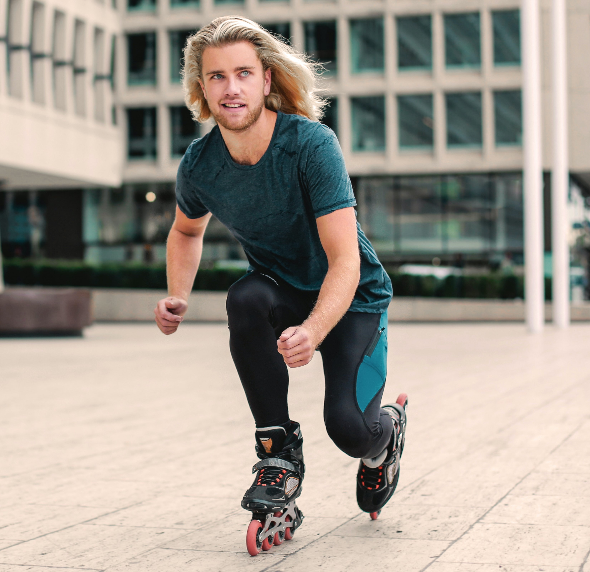
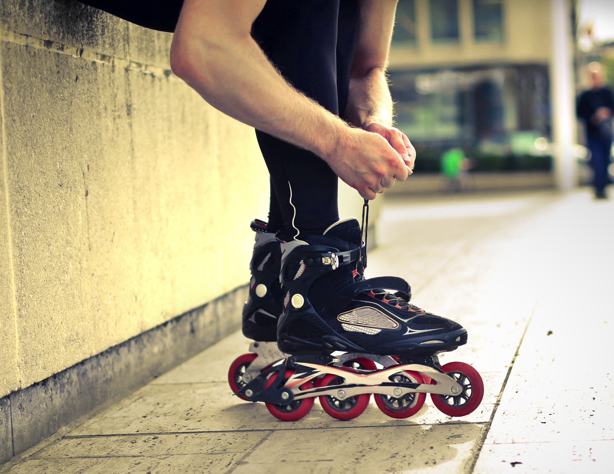
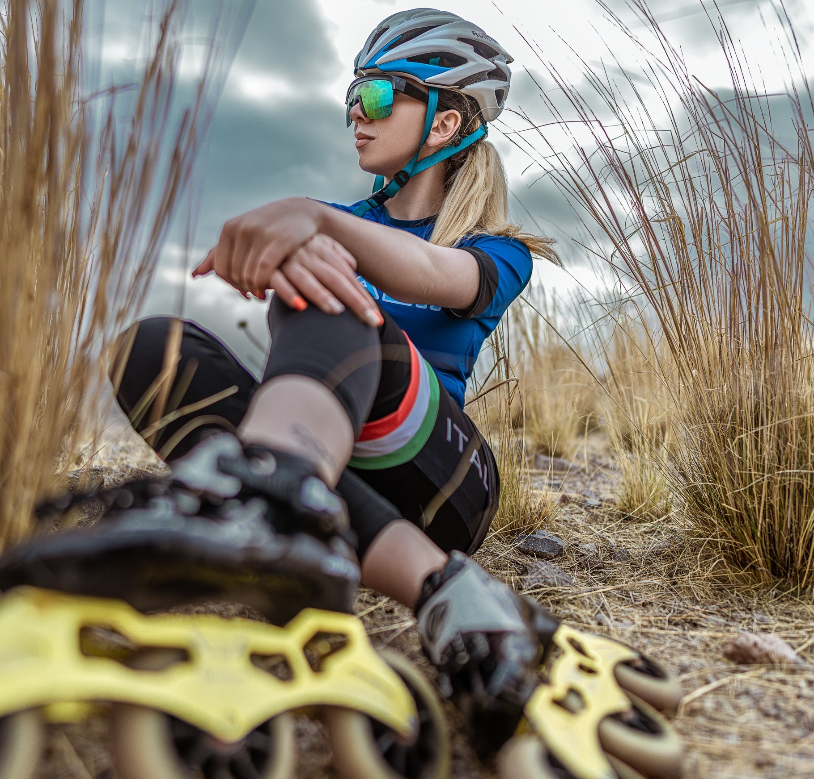
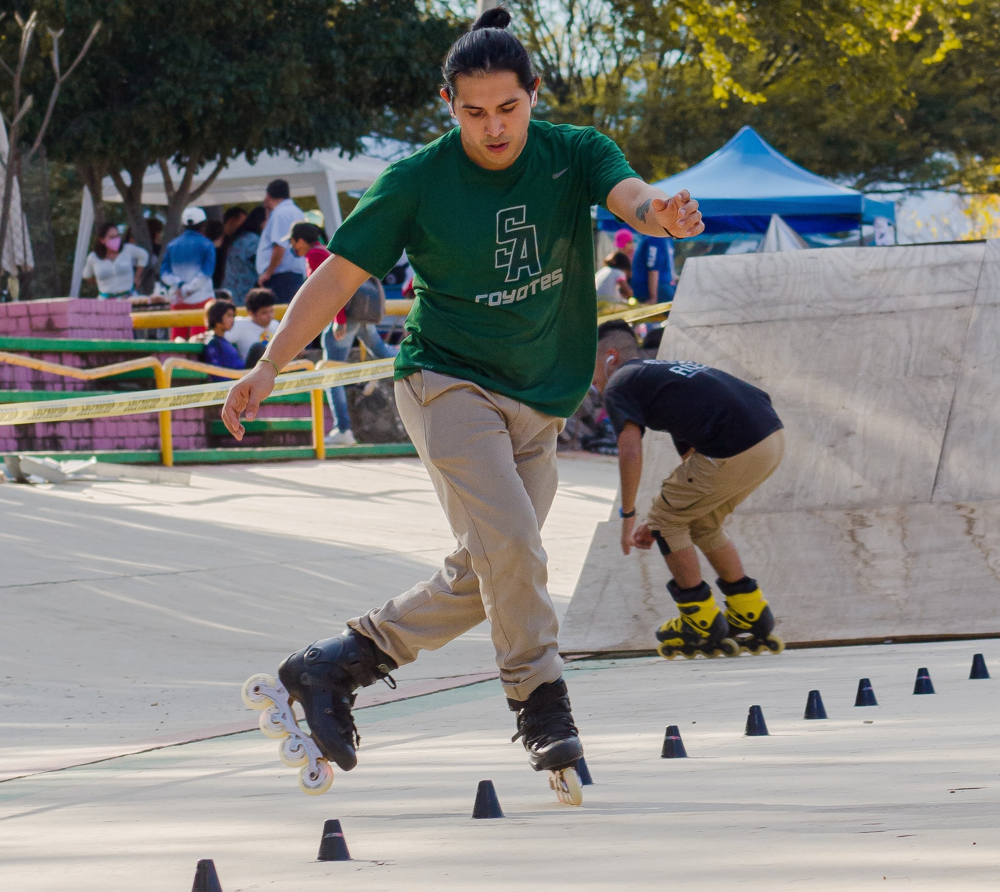
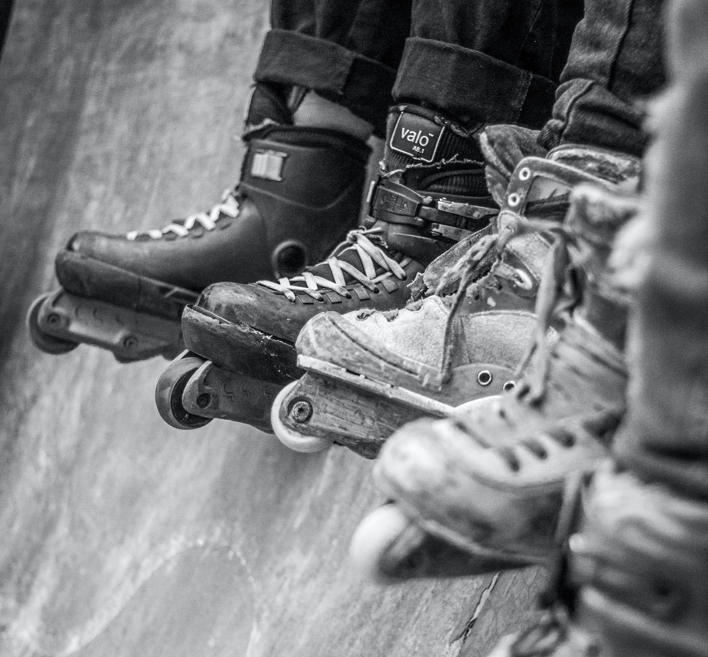
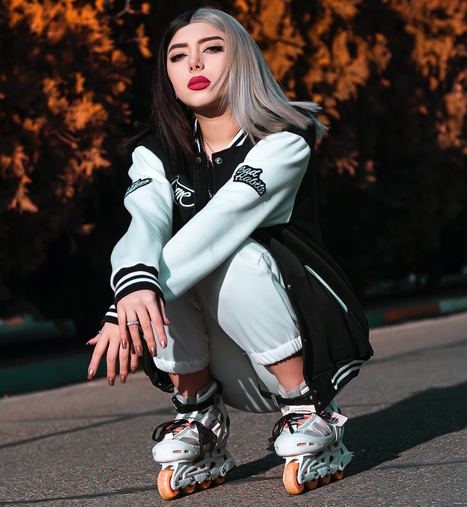
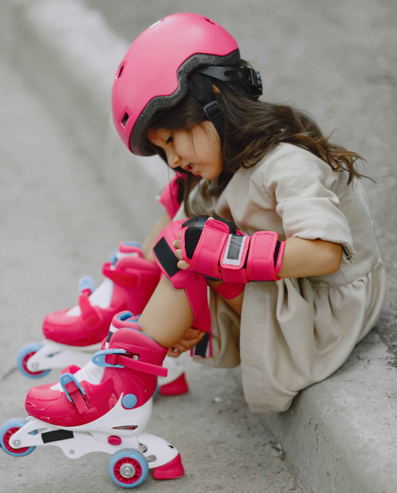
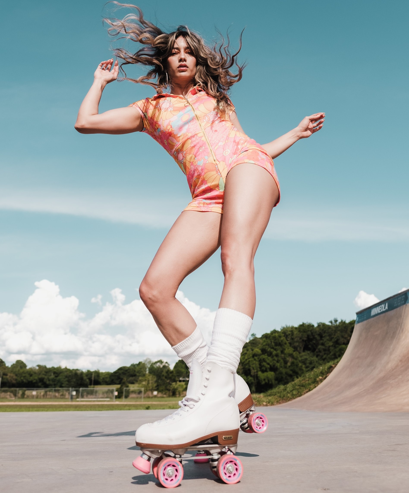

Ролики
З чого складаються:
манжет;
бакля;
п'яточний ремень;
чобіт;
рама;
гальма;
колеса.
Жорсткий чобіт використовується для дитячіх, хокейних, агресивних та фрискет роликів.
М'який чобір буде у роликів для відпочинку, фітнесу, бігу.

Вентиляція
Реалізеється за рахунок отворів у корпусі, використання підкладки з вологовідводних матеріалів, вставок з сітки.
Бакля
Бакля - це механічна застібка-затиск з ричагом для швидкої фіксації стопи та зручності затібки.
П'яточний ремень
Ремень з ліпучкою забеспечує додаткову фіксацію та кращу бігову стійкість.
Шнуровка класична
Для точної фіксації, плавного зав'язування та зручного використання.
Шнуровка швидка
Добавляє швидкості фіксації та простоти затягування

Рама
Може бути зроблена з різних матеріалів.
алюміній - забеспечує стабільність, легкість, гарна передача зусиль;
композит - поглинання вібрацій, не гнуться при боковому ударі;
екстудирований алюміній - міцність, великі навантаження, легкість, гарна передача зусиль м'язів.
Має різні види в залежності від розмірів.
стандартна довжина рами (250-280мм 4колеса): забеспечує меневриність, дозволяє виконувати трюки та нахили;
укорочена рама (242-243мм) більш міцна та маневрена, витримає жорсткий стиль катання та забеспечує хорошу керованість роликами;
для фітнеса використовуються моделі з рамою середньої висоти з більш низькою вагою.

Колеса
Колеса мають наступні характеристики:
диаметр - розмір колеса в мм;
жосткість - маркерується індексом дюрометрії (літерою А);
профіль. Буває гострим і забеспечює швидкість, напівклуглим - швидкість та стійкість, та плоский - стійкість;
гальма - розхідний матеріал. Складаеться з тримача та гальмівної колодки.

Підшипники
Зазвичай маємо по два на кожному колесі.
легкість роликів залежить від якості підшипників в колесах;
стандарт маркерування "608" та включає 8 кульок;
ролики для новачків та дитячі використовують ABEC3 та ABEC5;
ABEC7 та ABEC9 - для тих, хто володіє технікою.
ABEC - комітет з розробки підшипників - викоростовується для вказування класу точності виготовленя підшипників. Чим віще клас, тим меньше тертя та віще швидкість.

Види роликів
відпочинок. Підходять для новачків та тіх, хто обирає катання повільно та у своє задоволення.
фрістайл. Для цього стилю характерне швидке катання та виконання різноманітних стрибків та слайдів. Тому, жорсткий чобіт, колеса середніх розмірів (до 80мм) коротка
рама, система гашення вібрацій та бокової підтримки.
фітнес. Тут моють значення характер розгіну та комфорт. Такі моделі мають легкі та прочні конструкції (алюміньові рами), систему легкого взування та швидкою шнуровкою,
швидкосними підшипниками, великим діаметром коліс (до 90мм).
спалом. Потрібні суперманеврені ковзани з міцною конструкцією і короткою жорсткою рамою, забеспечують бокову підтримку.
швидкісне катання. Їзда на високих швидкостях потребує укорочену колодку, жерстку та легку раму, 4-5 великих колес та швидкісні підшипники (ABEC9).
екстрим. Повинні бути максимально стійкими до ударів та мати міцну конструкцію, жорсткий чобіт та маленькі колеса.
катання по бездоріжжю. Колеса досягають 15см в діаметрі та частіше за все виготовляються з гуми та накачені повітрям.
чоловічі, жіночі та дитячі.

Примірка
на спеціальні шкарпетки;
шнурки плотно стягуємо, але не сдавлюємо ногу. Тиск ровномірно росподіляємо по стопі;
п'яточний ремень плотно фіксує п'ятку;
закриваємо кліпсу верхньої баклі, щоб манжет плотно обхопив ногу;
перевіряємо відповідність розміру. Перевірка: ставимо на задне колесо та надавлюємо на п'ятку до упору, потім ставимо на передне колесо. Якщо п'ятка при цьому не змістилася ця модель підходить;
стоячи на роликах, необхідно спробувати завалити ролик всередину. Якщо можно стояти прямо без навантаження, то бокова підтримка хороша.

Захист
Захист обов'язково потрібно одягати. Пошкодження зап'ястя - найбільш поширена травма. Забиття колін - друга поширина травма. Захісні шорти використовуємо для захисту поперека.
Шолом потрібен незалежно від мастерності.

Запасні частини
Набір підшипників, тримач для гальм, гальма, набір колес, набір алюміньових втулок.